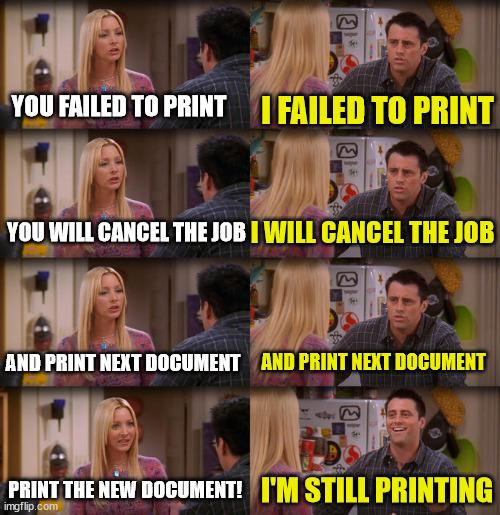

In 2015 I wanted to make a career change after spending 10 years in retail customer service. I made the decision to go to back to school and get a certificate in IT administration.
My passion is to serve and help those in need and lead by example. I want every encounter with clients to be a crazy amazing experience and empower them by sharing knowledge.

Project maintained by Leo